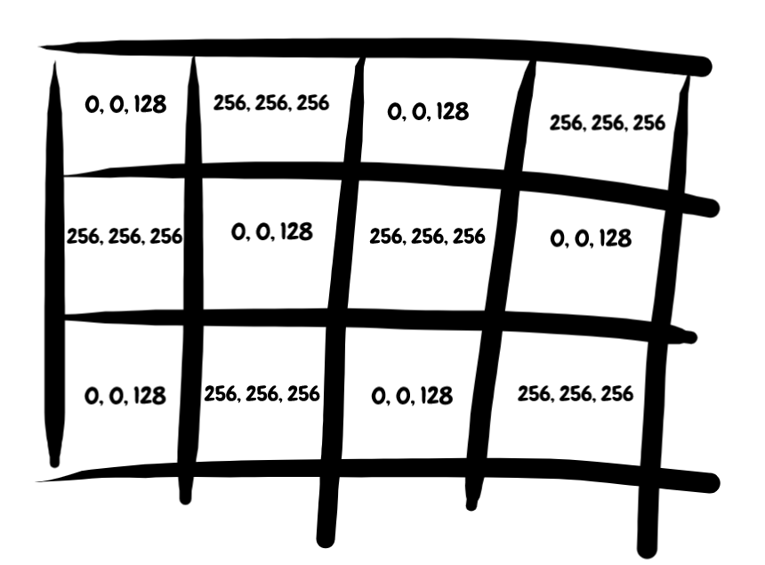
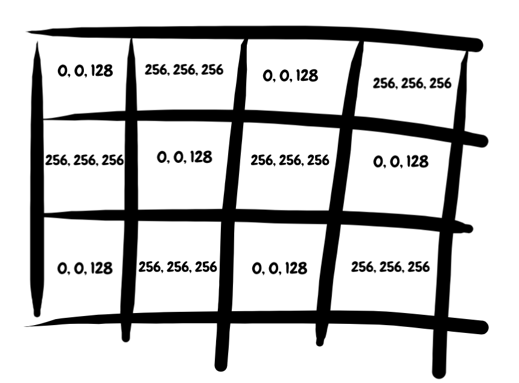

Simple DL Part 1: Introduction
November, 2020
Modern deep learning is a weird place. We have these amazing tools that are constantly redefining what can be done with computers (go take a look at AlphaFold), and yet we don't have any way of describing how these things actually work. Clearly someone knows what they are doing, because surely we aren't driving all those cars on a hunch? (*cough*) But from the outside looking in, it's witchcraft. Or, well, it was to me when I got started.

Yann LeCun, Geoffrey Hinton, Yoshua Bengio doing deep learning, probably.
After five years of actually working on this stuff, I think I've finally developed enough intuition to figure out how to actually do something interesting with this technology in a consistent way. And one of the first things I learned is that intuition is the cornerstone of modern deep learning practice.
I think of ML scientists as the modern equivalent of Roman bridge builders. Humanity wouldn't figure out how to formalize bridge building until Newton came along...but the Romans still made some damn good bridges. The individual engineers all had these mental models of how bridge building worked, and that allowed them to innovate and optimize. Even though every model was wrong, some of those models were useful. You even see the same kind of rise and fall of 'architectures'. For years everyone builds Clapper bridges, and then one day an engineer wakes up and goes 'Hey maybe arches would be better' and everyone starts doing that.
The Newton of deep learning will show up eventually, but it might take a few hundred years. In the meantime, we have to make due with intuition. Luckily, I think it's possible to build a pretty good mental model of deep ML models through practice. Yea, the first few times a model fails, it'll be a frustrating experience. But eventually you should be able to pattern match and generalize, doing a human form of gradient descent. In that sense, Deep learning is a bit like sculpture or photography -- after a while, you get an eye for it.

Michelangelo would've made a decent data scientist.
There are a lot of ML guides floating around out there, so let me start by saying what SimpleDL is not. It's not an implementation guide -- if I'm lucky I'll stay pretty far from actual code. It's not a dive into literature -- in a few places I might link to papers, and I might do a separate series on individual papers, but not here. It's not a highly rigorous mathematical approach to DL. It's not a history of ML. It's not a course on ML. It's definitely not a social commentary on ML.
This series is, first and foremost, about building an intuition for deep learning. The goal is for the reader to come away with an instinct for sniffing out what a model is doing, and why, and how.
This series is titled SimpleDL because I want to make things simple. But some familiarity with basic computing concepts will be helpful. If you've never touched a computer before, this series probably isn't for you. I'll be aiming for 'intermediate programmer, never worked in ML before' as my audience. That said, I think this will be most useful for folks who have maybe taken one or two classes on ML, and know some of the basic terms.
Before diving in, I want to highlight a few resources that really helped me get off the ground. First, the Oxford ML Class by Nando de Freitas. If you're interested in doing an actual course on this stuff, I think it's hard to beat this class. Second, the deep learning Youtube Videos also by Nando de Freitas. Nando is an amazing lecturer, and I think he does an excellent job mixing theory and practice.
Also, thanks for coming by to read some of the things I write! I hope it's useful/interesting. I don't know how frequently I'll update here, but when I do I'll post on Twitter.
Simple DL Part 2: Embeddings
December, 2020
In my opinion, you need to understand embeddings to really 'get' deep learning. Embeddings are the magic fairy dust that power every deep learning model, from ImageNet to GPT-3. I think in embeddings. Embeddings are the foundation for any intuition I have about DL, so all of my future posts in this series are going to refer back to the embedding concept.
TLDR
Embeddings are stores of arbitrary information plot concepts on continuous geometric spaces, kind of like how you can draw a map of some complex territory and get the general idea across. A good embedding is one where similar information is 'close' to each other in our map. We can visualize embeddings and reason about them as if they are objects (points) in space, and use mathematical operations on them to turn concepts into computation. Embeddings are constrained by the input data (features) and the loss function. The features limit what the embeddings can learn, and the loss tells the model what to prioritize. Models are as good as their features and as bad as their loss. We can improve a model's performance by changing the features, the architecture, or the loss function. No matter what approach we use, we should consider (visualize) how the changes impact the information in our embeddings.
Embedding Basics
Ok now for the long version. We'll start with a definition: an embedding is a list of numbers (AKA a float vector) that represents some information. You can have embeddings for just about any kind of information out there. There are word embeddings. There are sentence embeddings. There are image embeddings. There are graph embeddings. There are furniture embeddings. Basically, if you can think of a concept, you can represent it as an embedding. If you're more mathematically minded, check out the embedding wiki page for a formal description/definition of embeddings.
Information vs Format
This is already kinda weird. How can we take any concept and represent it as a list of numbers? To really grasp this idea, we need to remember that information is not the format. This is a core principle of information theory and underpins most of modern computer science. Basically, we can take a piece of information and represent it in any format, and the underlying information won't be any different. We might lose information in the conversion process, but that's due to practical limitations of the format.
An example may help nail all this down. Let's say we have a picture of my wonderful dogs, Sparky and Lego.

Dogs!
There is a lot of information in this picture. Can we convert that information to text without losing any info? We could try describing the image. "Two dogs" captures most of the information. "One small brown dog and one medium-sized gold dog on a slate grey surface" captures even more. We can keep going like this, with ever more complex descriptions -- a picture worth a thousand words, after all.
Can we do better? "Two dogs" captures a lot of the information, but its just 8 characters. It will always leave something out. Instead, we could go pixel by pixel and write out the colors. Starting from the top left, we could write "grey, grey, grey, light grey, light grey, grey, grey...". Not exactly Hemingway, but it would be a perfect representation of the image. We would capture all of the information.
The leap to an embedding is straightforward. Instead of words, we could use RGB values -- something like [(128, 128, 128), (128, 128, 128)...]. Flatten that out, and we've successfully turned our image into a numeric vector that perfectly captures all of original information.

 

Same information, different formats.
What about text? Can we turn text into an embedding? Well, one strategy could be to turn every character into a unique number, like ASCII. This is why a numeric sequence like 104 101 108 108 111 32 119 111 114 108 100 can be read as 'hello world' by a computer. If we had a really long sequence of text, like a book, we could instead turn every unique word into a unique number. So even though we started with text, we can pretty easily convert to a numeric representation.

Ok so hopefully by now you have some intuition for what an embedding is. Question: is [0.124, 458.2356, 85.3, 2.01] an embedding? Or is it a random list of numbers?
We need to make a small change to our initial definition.
An embedding is a list of numbers (AKA a float vector) that represents some information, as well as a mechanism for encoding and decoding that float vector to something useful. In the examples above, our encoding/decoding scheme was RGB or ASCII. In deep learning, our encoder/decoder is the Deep ML model.
Format Matters
Why do we bother with a float vector in the first place? If we can perfectly capture information in a bunch of different ways, why lists of numbers? The boring answer is that computers can operate on numbers really easily. The more interesting answer is that different formats let you manipulate your data in different ways.
Float vectors are continuous representations. You can compare them. You can add them together. You can average them. You can do all these neat mathematical operations on them to quickly and efficiently shift your data around. And this is really powerful, because you can turn concepts into computation.
Let's say we wanted to represent two concepts: gender, and royal status. We can represent these as axes on an XY coordinate plane, so that any coordinate [X, Y] corresponds to a gender/royal status pairing.

Not a political compass meme.
With this rough coordinate system, we can embed words by mapping them into x-y values. For example, we might say the word King is mapped to coordinates [1, 1]; the word Queen is mapped to [-1, 1]; the word Man is mapped to [1, 0]; and the word Woman is mapped to [-1, 0].
Now we can do some really cool stuff. We could average words together to find other words near their conceptual midpoints. We could subtract words to remove their meaning, or add words together to search for specific related concepts. We could add new dimensions, like a Z-axis for 'Age'. We can quantify words and use math to analyze them. That, to me, is magic.
We can do things like this. This example is pretty famous in NLP, thanks to a word embedding generator called Word2Vec.
We can do all of this magic because float vectors correspond really well to geometry. And that, to me, is the core of deep learning intuition. People aren't great at remembering lots of numbers, but we do a great job with spatial reasoning. Embeddings allow us to turn concepts into points in space, where we can visualize things like 'distance' or 'surfaces'. When I think about creating a model to embed cars I imagine a fantasy map, where different points on the map represent specific car makes and models. You have a Mercedes town, which is pretty close to BMW-burg , and kinda far from the Bus-ville. If our map does a good keeping similar things close to each other, we've solved 90% of the deep learning problem.

I couldn't get anyone to draw me a fun fantasy map of Car-Land so we'll have to go with the boring technical version.
Imperfect Information
With infinite resources, we could perfectly convert any piece of data from one format to another. That's neat, but also just about useless. Most of the time, we care about removing information, filtering important data from noise. This is especially true in deep learning, where a hotdog image classifier might be taking in thousands of pixel values and returning only a single bit.
Embeddings go hand-in-hand with information compression -- the challenge of a good embedding is to take all of the important parts of the really large input, and keep the relevant stuff. Our map doesn't need to draw every tree and mountain in high resolution detail, but it does need to make sure the borders are in the right spot.
But how do we compress information?
So far we've been isolating the axes of our embedding -- we have a 'gender' dimension, and a 'royalty' dimension, and maybe an 'age' dimension, and they don't mix at all. This makes it easy to draw a map, but the map isn't going to carry a lot of info. To work with larger data, we need to get rid of axes and look at regions instead. Instead of saying "+Y = royalty", we would say "the area around coordinates [0, 1] is associated with royalty". Notice how we are defining the region with both coordinates. This gives us much more freedom to represent different concepts.
A rough idea of how an embedding might represent many concepts in only two dimensions. The axes aren't relevant anymore -- each point is still an X/Y value, but each semantic meaning has it's own area of the map. Homework question: is this a good or bad embedding? Why?
Because we can slice our float vectors all sorts of ways, we can create millions of semantic combinations that a human would never be able to remember or process. Luckily, we don't need to -- neural networks do it for us. When a deep model is training, it's learning how to draw a super high dimensional map at each layer. And, it can mix and match input data in all sorts of arbitrary ways to figure out where the imaginary lines should be, and which concepts should be close to other concepts.
Features, Embeddings, and Losses: Making a Model
Wait. How does a deep model decide where the imaginary lines should be? What does it mean for concepts to be 'close together'?
Let's take a step back. Every deep learning model is composed of three parts: the features, the embeddings, and the loss function. A "feature" is just a fancy way of saying input data. And the embeddings are the pieces of the model itself -- every deep model is basically just a stack of embeddings.
The loss function is the thing that the model is trying to solve. If you have an image recognition task, for example, the loss will be a measure of how good the model is at recognizing objects in images. During training, the model manipulates the stack of embeddings based on the features and loss.
Each embedding is trying to draw a map based on the information provided by the input features. If we want to identify vehicles, the embedding-map needs to have a clear border between busses and sports cars. If we want to classify text, the embedding-map needs to be able to separate a frown from a smile. And, if a human can't figure out how to draw a reasonable separation boundary for a few data points...well, you probably want to think about your problem and your data some more.
Here, we have two models with the same color/shape feature input. The left model has a loss that is trying to predict color, and the right model has a loss that is trying to predict shape. The embeddings store information based on the loss -- the left model embeddings throw away the shape information and retain color, while the right model embeddings throw away color information and retain shape.
Overall, the features and the loss function constrain the embeddings. Embeddings can only represent information that is provided in the initial feature set. And the embeddings remove (or emphasize) information based on the loss function. In my head, it's like sculpture -- the features are the clay, the loss is the final vision, and the backpropagating gradients chip away or add to the embeddings so that they are they right shape and size.
I think this gets at why Deep ML models are so powerful. You can throw any features and any loss function into the thing, and the inner embeddings will find a way to connect the inputs and outputs. There's also a corollary to this: your models will only ever be as good as your features and as bad as your loss.
I like this framing because it also gives us some insight in how we can change our models so they do what we want. There are really only three levers: we can add new or more features, to try and give the model more to work with; we can change up the architecture, to try and influence how the underlying embeddings mix and match data; or we can modify the loss(es), to sculpt the underlying information as it flows through the model. Each of these approaches has trade offs. Adding more features will always help the model, but getting new data is really hard. Changing the architecture in a useful way requires a stroke of inspiration or dumb luck. And modifying the loss is highly volatile.
There's one other cool thing about this framing. If we're ever confused about what our model is doing, we can take our model embeddings and plot them in 2D, like an actual map. This will let us see whether similar concepts are appearing close or far away. We'll get into debugging models down the line, but Google 'TSNE plots' if you're curious.
Conclusions
This is already a pretty long post, and we're starting to move away from embeddings alone, so I'll leave off with some conclusions here.
There are probably other ways to reason about deep learning, but for me the embedding concept is absolutely critical. When I think about deep models, I need to visualize how information flows through the embeddings I've constructed. Over the rest of the series, we're going to try this visualization process with a bunch of popular architectures -- Convolutions, LSTMs, GANs, Graph Neural Networks, Transformers, and more. And hopefully in the process, you'll get a bit more intuition for how deep learning works.
Acknowledgements
Special thanks to Aaron Cooper, Azraf Anwar, Hunter Larco, and Isabel Kim for reading drafts of this work.